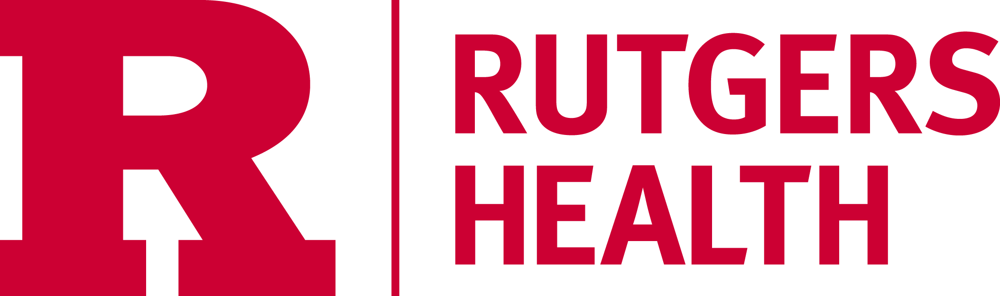

The American Physician Scientists Association (APSA) Mid-Atlantic Regional Meeting will take place on Saturday March 28th, 2026, at Rutgers Health – New Jersey Medical School (NJMS) in Newark, New Jersey. This meeting provides opportunities for networking and mentorship among students from different institutions and training levels, in addition to engagement with established physician-scientists. The program will feature discussions on basic science and clinical research, pioneering new treatments, and translating basic scientific advances from bench to bedside. Attendees will have the opportunity to present and learn about cutting-edge research across a wide range of biomedical fields, including immunology, biochemistry, drug development, and neuroscience. This meeting includes a poster session, multiple oral presentations, focused round-table discussions led by physician scientists who are leaders in their fields, and a keynote presentation given by Dr. Ronald Germain, MD/PhD and NIH Distinguished Investigator.

Attendance at this meeting is open to trainees of all levels interested in and pursuing a career as a physician-scientist. We welcome undergraduate, graduate and medical students as well as resident physicians, fellows, early career investigators and medical professionals who conduct biomedical research. Geographically, this event will serve trainees and physician scientists from the Mid-Atlantic United States including New Jersey, Pennsylvania, Delaware, Maryland, Washington DC, Virginia, and West Virginia, but will also be open to students from the NYC area, northeast and other regions of the US.
Registration is free. The deadline to register is Friday, March 13th, 2026 at 11:59 PM Eastern Time.
Travel awards are available to support trainees and early-career investigators who would benefit from financial assistance to participate in this event. Awards are intended to help offset costs associated with attending the meeting, including transportation and lodging. Applicants will be selected based on their motivation to attend, the anticipated impact of the meeting on their professional development and demonstrated need for travel support. Application deadline is Friday, February 21st, 2026 at 11:59 PM. Decisions will be released on Friday, March 6th, 2026
The conference will take place at:
Rutgers Health – New Jersey Medical School
International Center for Public Health (ICPH)
225 Warren Street, Newark, NJ 07103
The International Center for Public Health is located within the University Heights district of Newark, adjacent to the Rutgers University–Newark and NJIT campuses.
By Air: The closest and most convenient airport is Newark Liberty International Airport (EWR), located approximately 10–15 minutes by car from the ICPH. From the airport, visitors may travel to campus via taxi, rideshare services, or public transportation. Public transit options include the AirTrain Newark, which connects to NJ Transit and Amtrak rail service at Newark Liberty International Airport Station.
By Public Transit: Newark Penn Station is the primary rail hub serving the city and is accessible via Amtrak, NJ Transit, and PATH trains from New York City. Newark Penn Station is located approximately one mile from the ICPH. From Newark Penn Station, visitors may take a taxi or rideshare or use the Newark Light Rail. Some NJ Transit lines (such as the Montclair-Boonton and Morristown lines) stop at Newark Broad Street station, from which visitors may take a taxi or rideshare or transfer to the Newark Light Rail. The Newark Light Rail provides service to the Warren Street/NJIT station, which is within walking distance of ICPH. NJ Transit bus routes also serve the University Heights area, with multiple stops near the medical school campus.
By Car: Rutgers NJMS is accessible by car via Interstate 280, the Garden State Parkway, and local Newark roadways. Limited visitor parking is available near ICPH and will require a visitor pass (please reach out to apsa@njms.rutgers.edu for a visitor's pass). Street parking is available in surrounding areas, subject to posted restrictions. Additional public parking garages are located near University Hospital and in downtown Newark.
Visitor parking in lot near ICPH: 249 Warren St, Newark, NJ 07103
Visitor parking in garage at medical school: 255 Norfolk St, Newark, NJ 07103
Hotel Accomodations: Commonly used hotels in downtown Newark include the Courtyard by Marriott Newark Downtown, TRYP by Wyndham Newark Downtown, Robert Treat Hotel, and DoubleTree by Hilton Newark Penn Station. These hotels are within walking distance or a short transit ride from ICPH.
Hotels near Newark Liberty International Airport include the Courtyard by Marriott Newark Liberty International Airport, Fairfield Inn & Suites Newark Liberty International Airport, SpringHill Suites Newark Liberty International Airport, Holiday Inn Newark International Airport, and DoubleTree by Hilton Hotel Newark Airport. Travel from airport-area hotels to campus typically requires a short car or rideshare trip.
Rutgers Health – New Jersey Medical School facilities, including ICPH, are ADA compliant. Visitors requiring accessibility accommodations are encouraged to email apsa@njms.rutgers.edu in advance.
| Time | Session | Features & Speakers |
|---|---|---|
| 8:30-9:00am | Registration, Continental Breakfast, and Poster Set-Up | |
| 9:00-9:30am | Welcome from NJMS and APSA | |
| 9:30-10:30am | Student Talks #1 | 4 students – 15 minutes each |
| 10:30-10:45am | Coffee Break | |
| 10:45am-12:00pm | Keynote Address | Ronald N. Germain, MD/PhD NIH Distinguished Investigator, National Institute of Allergy and Infectious Disease |
| 12:00-12:45pm | Lunch Break | |
| 12:45-1:45pm | Breakout Sessions |
|
| 1:45-2:45pm | Student Talks #2 | 4 students – 15 minutes each |
| 2:45-3:00pm | Coffee Break | |
| 3:00-3:45pm | Student/Sponsor Talks #3 | 3 talks – 15 minutes each |
| 3:45-4:45pm | Poster Session | |
| 4:45-5:00pm | APSA Representative Talk | |
| 5:00-5:30pm | Closing Remarks and Awards | |
| 5:30pm-- | Happy Hour Reception | McGovern's Tavern - 58-60 New St, Newark, NJ 07102 (10 minute walk) |
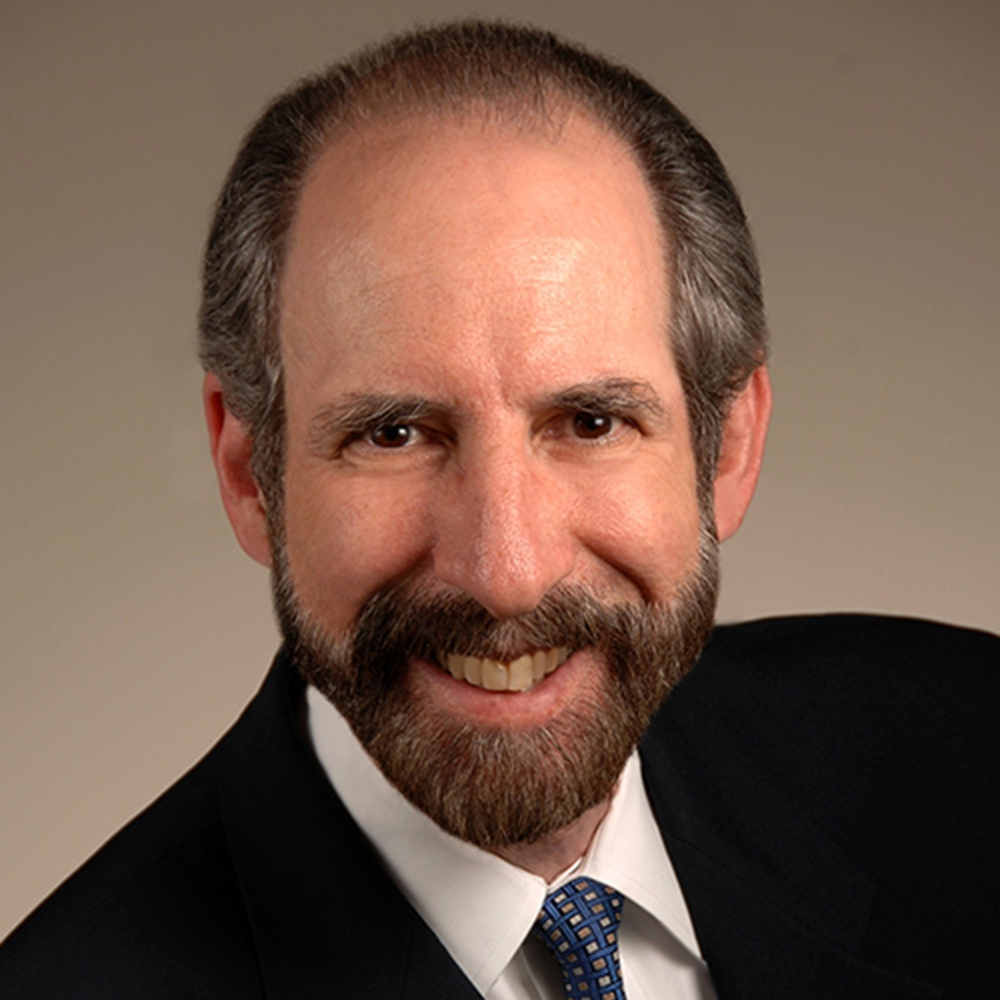
NIH Distinguished Investigator
National Institute of Allergy and Infectious Disease
Keynote Speaker

NIH Distinguished Investigator
National Institute of Allergy and Infectious Disease
Keynote Speaker
Dr. Germain received his Sc.B. and Sc.M. from Brown University in 1970 and his M.D. and Ph.D. from Harvard Medical School and Harvard University in 1976. From 1976 to 1982, he served as an instructor, assistant professor, and associate professor of pathology at Harvard Medical School. From 1982 to 1987, he worked as a senior investigator in the Laboratory of Immunology (LI). In 1987, he was appointed Chief of the Lymphocyte Biology Section. In 1994, Dr. Germain was named Deputy Chief of LI. In 2006, he became director of the NIAID Program in Systems Immunology and Infectious Disease Modeling, which became the Laboratory of Systems Biology in 2011 and for which he served as Chief of the Laboratory. He also served as an associate director of the Trans-NIH Center for Human Immunology, Inflammation, and Autoimmunity (CHI) from 2010-2018. In 2018, the LI and LSB merged to create the Laboratory of Immune System Biology (LISB) with Dr. Germain as Chief of the Laboratory. Since receiving his doctoral degrees, he has led a laboratory investigating basic immunobiology. He and his colleagues have made key contributions to our understanding of MHC class II molecule structure–function relationships, the cell biology of antigen processing, and the molecular basis of T cell recognition.
More recently, his laboratory has explored the relationship between immune tissue organization and control of immunity studied using dynamic and static in situ microscopic methods that his laboratory helped pioneer. His group also conducts research in quantitative modeling of immune signaling circuits and in the broader application of the methods of systems biology to immunological questions. He has published more than 400 scholarly research papers and reviews and serves on the editorial boards of many scientific journals.
Among his numerous honors, he was elected as an associate (foreign) member of EMBO (2008), elected to the National Academy of Medicine (2013) and to the National Academy of Sciences (2016), received the Meritorious Career Award from the American Association of Immunologists (2015), was chosen as NIAID Outstanding Mentor (2016), named a Distinguished Fellow of the American Association of Immunologists (2019) and designated an NIH Distinguished Investigator. He has trained more than 70 postdoctoral fellows, many of whom hold senior academic and administrative positions at leading universities and medical schools.
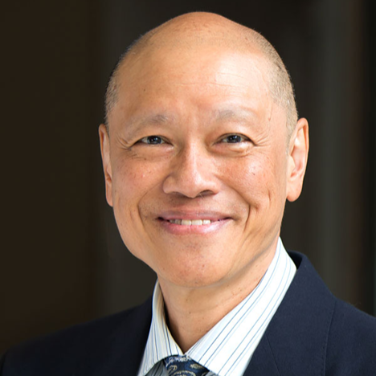
Professor of Medicine
Co-Director of MD/PhD Program
Rutgers Health New Jersey Medical School
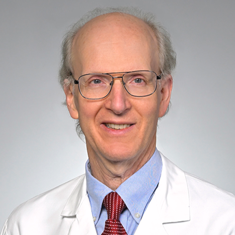
Professor of Medicine in Hematology-Oncology and Cell/Developmental Biology
Director of Physician-Scientist Program
University of Pennsylvania Perelman School of Medicine
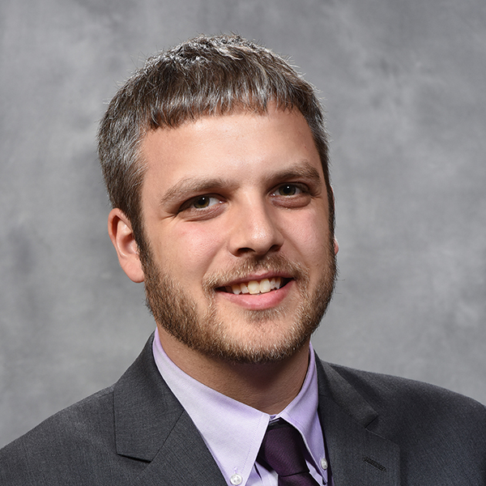
Assistant Professor of Emergency Medicine
Assistant Medical Director of Emergency Medical Services
Rutgers Health New Jersey Medical School
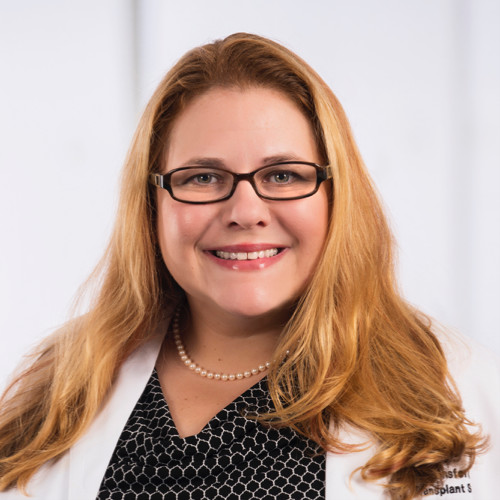
Assistant Professor of Surgery, Division of Liver Transplant and HPB Surgery
Rutgers Health New Jersey Medical School
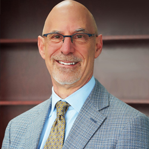
Chair & Professor, Department of Neurosurgery
Senior Vice President Neurosurgical Services
Rutgers Health New Jersey Medical School & Robert Wood Johnson Medical School
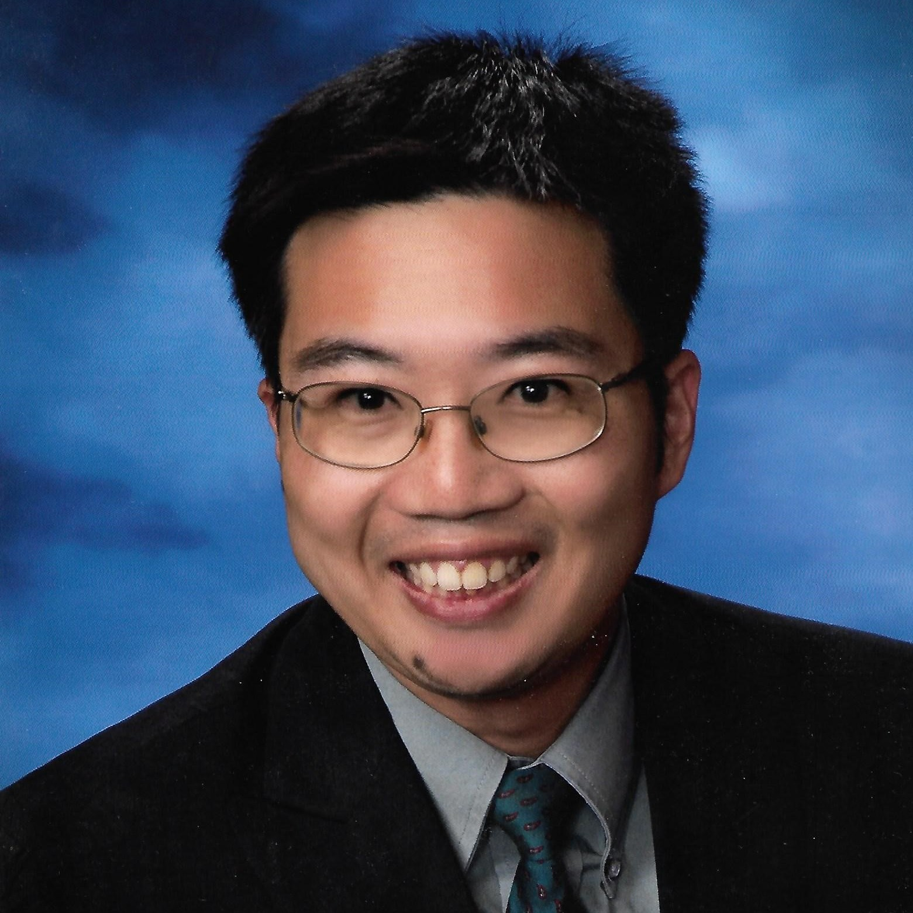
PGY1 Radiation Oncology Resident
NYU Grossman School of Medicine
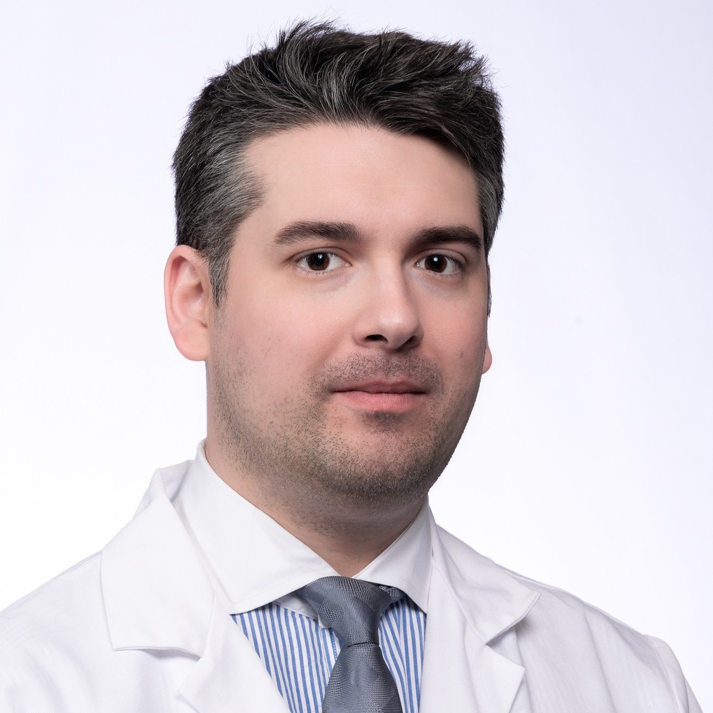
Postdoctoral Clinical Fellow
Assistant Attending, Department of Pathology and Cellular Biology
Columbia University Irving Medical Center
Hima Tallam, MD/PhD Student, GS3
NJMS APSA Co-President
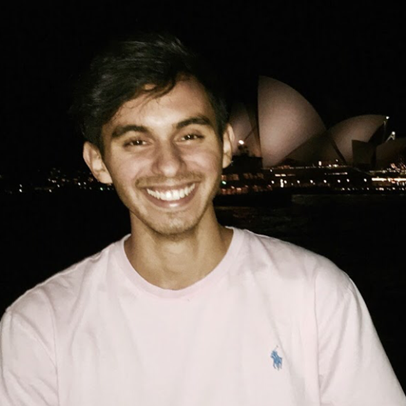
James A. Tranos, MD/PhD Student, GS3
NJMS APSA Co-President
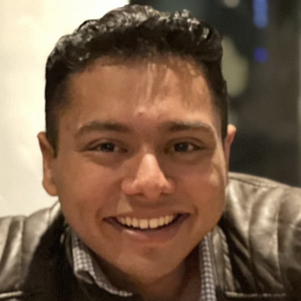
Arman Sawhney, MD/PhD Student, GS3
NJMS APSA Co-Vice President
Christina Vyzas, MD/PhD Student, GS3
NJMS APSA Co-Vice President
Carter Burton, MD/PhD Student, GS4
NJMS APSA Treasurer
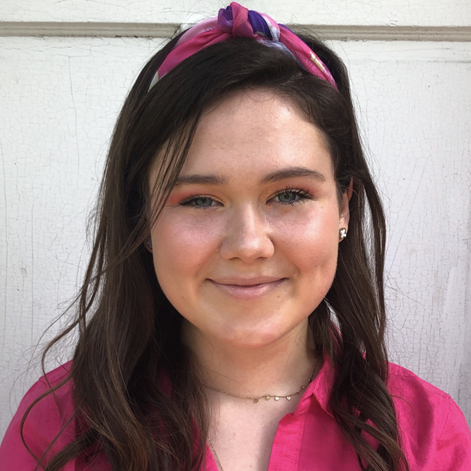
Kyleigh Brimmer, MD/PhD Student, MS3
NJMS APSA Clinical Representative
Sharon Zeldin, MD/PhD Student, GS2
NJMS APSA Graduate Representative
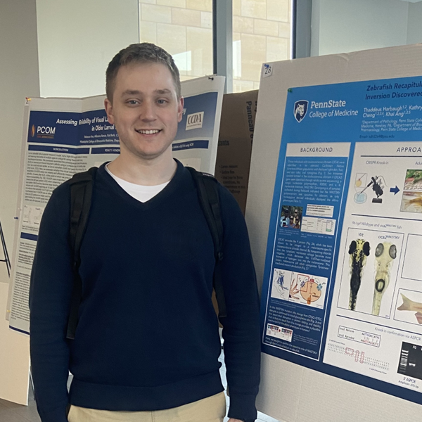
Thaddeus Harbaugh, MD/PhD Student, MS2
NJMS APSA Preclinical Representative & Social Media Coordinator